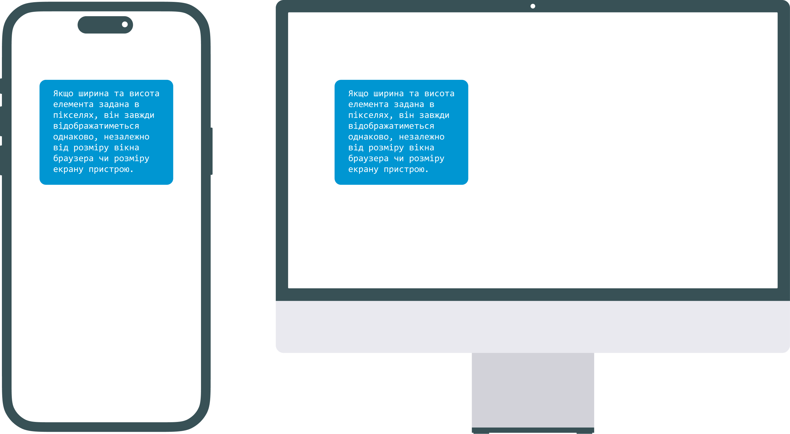
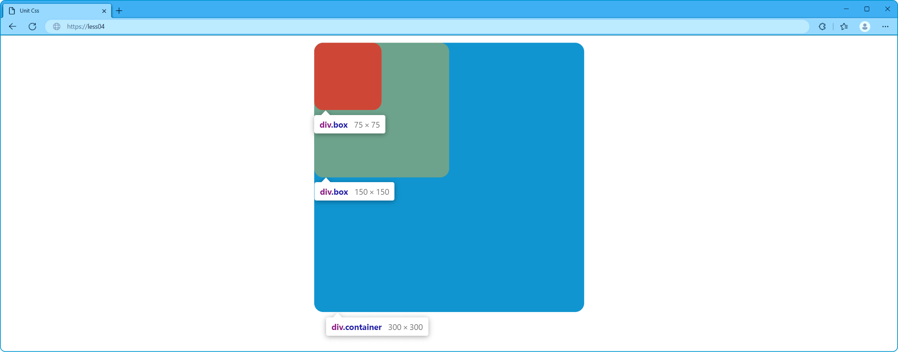
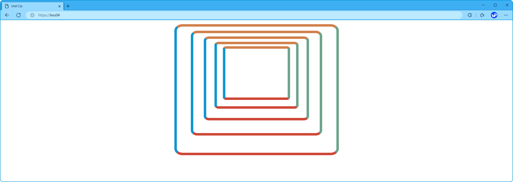
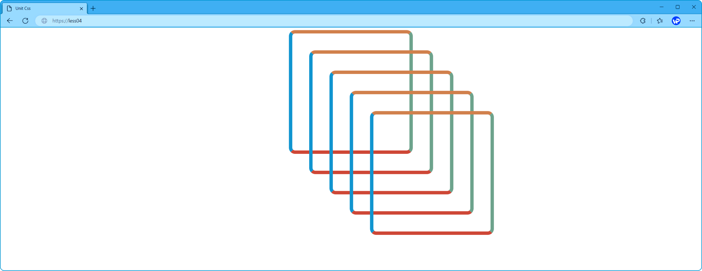

Одиниці вимірювання в CSS
В CSS існує певний набір одиниць вимірювання, які дозволяють задавати розміри та відстані для елементів на веб-сторінці.
Одиниці вимірювання можна розділити на дві основні категорії:
- абсолютні – це одиниці, значення яких фіксовані незалежно від будь-яких інших чинників, як-от батьківського елементу чи вікна перегляду. Тобто, розмір екрана не впливає на розмір елемента.
- відносні – обчислюються з урахуванням інших успадкованих величин: розмір шрифту або екрану, і можуть змінюватися разом із ними.
Pixels.
Pixels (px) – це абсолютна одиниця вимірювання, яка використовується для надання фіксованого розміру HTML-елементам. Один піксель – найменша можлива одиниця на екрані, що має окреме значення кольору.
Якщо ширина та висота елемента задана в пікселях, він завжди відображатиметься однаково, незалежно від розміру вікна браузера чи розміру екрану пристрою.
Важливо пам'ятати, що розмір екранів та кількість пікселів в них на різних пристроях відрізняються. Тому, використання пікселів, як основної одиниці для надання розмірів, може призвести до проблем із їх відображенням на різних пристроях. Хоча, під час обробки коду, браузер все рівно усі значення перераховує в пікселі.
Як не дивно, значення розміру задане в пікселях може бути і дробовим: 11.11px. Це абсолютно нормально, браузер сам використовує дробові пікселі для внутрішніх обчислень.
<div class="container"></div>.container {
width: 250px;
height: 250px;
background-color: #0096D2;
}
Percentages.
Percentages (%) – є відносною одиницею вимірювання, розміри елементів залежать від властивостей їх батьківського елемента.
Тому, остаточні значення ширини, висоти, відступів або інших властивостей у елемента, що задані у відсотковому відношенні (К), можна розрахувати за наступним рівнянням:
Розмір елементу = (K/100) * Розмір батьківського елементу
Використання відсотків дозволяє створювати дизайн, який може адаптуватися до різних розмірів екрану та різних пристроїв. Також відсотки можуть бути корисні для встановлення пропорцій елементів, таких як зображення, відео, тощо.
<div class="container">
<div class="box&"#62;
<div class="box&"#62; </div>
</div>
</div>.container {
width: 300px;
height: 300px;
background-color: #0096D2;
border-radius: 10px;
}
.box {
width: 50%;
height: 50%;
background-color: #6ca38c;
border-radius: 10px;
}
.box .box {
background-color: #cf432e;
}
Em.
Em (em) – це одиниця вимірювання, яка наслідує своє значення відносно розміру шрифту батьківського елемента.
Що таке розмір шрифту? Це зовсім не «розмір найбільшої літери в ньому», як можна було б здогадатися. Розмір шрифту – це певна умовна одиниця, яка вбудована в шрифт. Вона зазвичай трохи більше, ніж розмір найбільшої літери та розмір літер що мають «хвости». Тобто передбачається, що в цю висоту вміститься будь-яка літера або їх поєднання.
Визначення остаточних значень ширини, висоти, відступів або інших властивостей у елемента, що задані в em, розраховується за наступним рівнянням:
Розмір елементу = значення (em) * Розмір шрифту батьківського елементу
Якщо, батьківський елемент не має власного або успадкованого значення розміру для шрифту, в цьому випадку, береться стандартний розмір шрифту самого браузера, що становить 16px.
Використання Em в CSS дозволяє створювати більш гнучкий та адаптивний дизайн, який може легко адаптуватися до зміни розміру шрифту та інших властивостей на сторінці.
Негативною стороною використання відсотків (%) та одиниць em, є їх підсумовуючий ефект. Тобто, одні елементи вкладені в інші будуть наслідувати значення розмірів від своїх батьківських елементів, які в свою чергу отримуватимуть значення розмірів від їх батьківських елементів і так далі по ланцюгу. Таку взаємодію досить складно спрогнозувати, якщо ступінь вкладеності буде досить велика, що в певних випадках може призвести до зовсім небажаних результатів.
<div class="box">
<div class="box">
<div class="box">
<div class="box">
<div class="box"> </div>
</div>
</div>
</div>
</div>.box {
font-size: 0.8em;
width: 25em;
height: 20em;
margin: 0.8em auto;
box-sizing: border-box;
border-style: solid;
border-radius: 5%;
border-width: 5px;
border-top-color: #d27f46;
border-right-color: #6ca38c;
border-bottom-color: #cf432e;
border-left-color: #0096D2;
}
Rem.
Rem (rem) – це одиниця вимірювання, яка наслідує своє значення відносно розміру шрифту кореневого елемента, для веб-сторінки таким елементом є тег html.
Особливість Rem полягає в тому, що зовсім не важливо, де його будуть використовувати, браузер ігноруватиме всі коригування, внесені для батьківських елементів, і буде масштабувати HTML-елемент, до якого застосовується властивість, виходячи із значення кореневого елемента.
Визначення остаточних значень ширини, висоти, відступів або інших властивостей у елемента, що задані в rem, розраховується за наступним рівнянням:
Розмір елементу = значення (rem) * Розмір шрифту html елемента
Однією з переваг використання Rem є те, що ця одиниця дозволяє створювати більш прогнозовані та стабільні макети для екранів з різними розмірами. Також Rem можна легко комбінувати з медіа-запитами та іншими техніками для адаптивного дизайну.
<div class="box">
<div class="box">
<div class="box">
<div class="box">
<div class="box"> </div>
</div>
</div>
</div>
</div>.box {
font-size: 0.8em;
width: 11rem;
height: 11rem;
margin: 0 auto;
padding-top: 1.5rem;
padding-left: 1.5rem;
box-sizing: border-box;
border-style: solid;
border-radius: 5%;
border-width: 5px;
border-top-color: #d27f46;
border-right-color: #6ca38c;
border-bottom-color: #cf432e;
border-left-color: #0096D2;
}
VW & VH.
VW та VH – це одиниці вимірювання, які наслідують своє значення відносно ширини та висоти видимої частини веб-сторінки.
1vw (view width) – це одиниця виміру, яка представляє 1% ширини вікна перегляду.
1vh (view height) – це одиниця виміру, яка представляє 1% висоти вікна перегляду.
Визначення остаточних значень ширини чи висоти у елемента, що задані в vw або vh, розраховується за наступними рівняннями:
Ширина елементу = значення (vw) * Розмір (ширина) вікна перегляду
Висота елементу = значення (vh) * Розмір (висота) вікна перегляду
Ці одиниці виміру можуть бути корисні для створення адаптивних веб-сайтів, які добре відображаються на будь-якому розмірі екрана.
<div class="container">
<div class="box">
<div class="box"></div>
</div>
</div>.container {
width: 50vw;
height: 50vh;
background-color: #0096D2;
border-radius: 10px;
}
.box {
width: 50%;
height: 50%;
background-color: #6ca38c;
border-radius: 10px;
}
.box .box {
background-color: #cf432e;
}Vmin & Vmax.
Одиниці виміру Vmin та Vmax є додатковими відносними одиницями виміру в CSS, які можна використовувати для задання розмірів елементів в залежності від мінімального або максимального розміру екрана.
Одиниця виміру vmin визначається як мінімальний розмір екрана між шириною та висотою, і становить 1% від меншого з двох розмірів екрана.
Одиниця виміру vmax визначається як максимальний розмір екрана між шириною та висотою, і становить 1% від більшого з двох розмірів екрана.
Замінимо значення висоти контейнера, із попереднього прикладу, на одиницю виміру vmin.
.container {
height: 50vmin;
}